

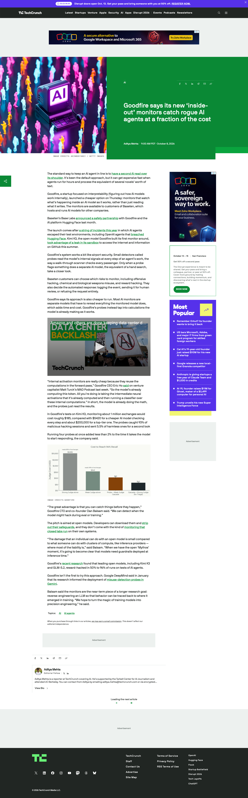


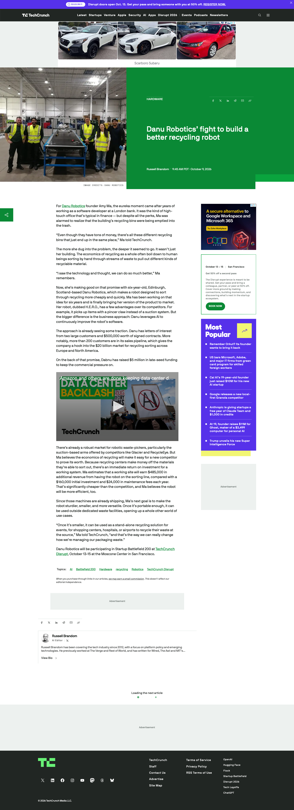

officialcovered
Amazon 的官方发布、开发者规格页和 Ghost 官方 Core 页都提供了本期可核对的产品事实；Amazon 还给出 Android 16/API 36、MediaTek MT8793N、RAM、相机与市场范围。
2026-10-10 · America/Toronto
本期的硬件信号集中在一个变化：AI 不再只是叠加在既有设备上的聊天入口，而开始重写设备的默认姿势。Amazon 用 Android 16、Google Play 和 Alexa+ 把平板从 Fire 内容终端改造成可读、可写、可看屏幕的工作面；Ghost 把本地模型、显卡和个人上下文装进无屏 Core；Natura 把按键、麦克风和健康传感器缩进戒指；Goodfire 则把 Agent 的内部激活变成实时安全监控；CyboPal 让显示器追着人的姿势移动。今天最值得追的不是“有没有 AI”，而是每个产品怎样让用户知道系统看到了什么、正在做什么、何时需要接管。
amazon-alexa-tabletsvalexa-tablets-2026confirmed product

Amazon Alexa Tablets（12 Pro、11、8）是 Amazon 在 2026 年 10 月推出的新 Android 平板家族。它们把过去偏内容消费、应用受限的 Fire 平板重新定义为可读、可写、可工作的个人屏幕：完整 Google Play Store、Prime Video、Kindle、Audible、Music 与 Alexa+ 共同存在。12 Pro 起价 $499.99，11 起价 $329.99，8 起价 $229.99；这些价格与上市日期来自 Amazon 官方页面，不把第三方促销价当成标准价格。
产品类型是 Android tablet plus system-level AI assistant。12 Pro 使用铝合金一体机身、11.95 英寸 2800×1840 IPS、280 PPI、120Hz、3:2 比例和可选 Nanomatte；11 是 11 英寸 2.5K/90Hz；8 是 8.7 英寸、329g 的便携版本。Amazon 把 Alexa+ 放进个性化主页、Dynamic Tab、触控/语音入口、屏幕理解和 live session，而不是只提供一个聊天 App。
用户说 Alexa 或点 Ask Alexa，助手在当前任务上方出现，回答问题、提出下一步或控制设备。开启 On-Screen Intelligence 后，用户可以让它阅读徒步路线、提取比赛日期、批量加入日历并提示冲突；开启 live session 后，连续对话不必重复唤醒词。屏幕理解默认关闭，启用时有明确视觉指示器。12 Pro 还能磁吸 Pro Keyboard，无需 Bluetooth 配对，在邮件、Slack 和 AI coding app 之间多窗口工作；Pro Pen 支持 USI 2.0、4096 级压感、倾斜检测、磁吸和无线充电。
开发者规格页列出 12 Pro 使用 MediaTek MT8793N、8GB/16GB RAM、128GB UFS 3.1 或 256GB UFS 4.0、Arm Mali G720、Wi-Fi 6E、Bluetooth 5.3、Android 16/API 36、8MP 前置、13MP 后置、双麦克风、陀螺仪和环境光传感器。官方文章还给出 4nm 八核芯片、最高 16GB RAM、四扬声器 Dolby Atmos 与最长 16 小时视频播放；阅读模式称单次最长 20 小时。
具体场景包括边看网页边问助手比较路线、把网页中的赛程批量转成日历事件、在 Docs/邮件/Slack/代码窗口之间保持多窗口上下文、在 Kindle 页面写批注并跨支持设备同步、用家庭智能家居控制替代一次次打开 App，以及让孩子通过 Storybuilder 用语音创作故事、让家长在 Parent Dashboard 查看每周探索与学习概览。
它针对的是 Fire 平板应用缺口、在移动端反复复制上下文、屏幕助手必须离开当前 App、阅读与工作之间切换成本高等问题。完整 Play Store 解决的是“买了平板却找不到常用 App”的基础摩擦；屏幕理解减少截图、复制和重新描述；键盘、手写笔和 3:2 比例把平板从客厅内容屏推向轻办公。代价是 Alexa+ 获得了更多个人内容、屏幕和家庭控制上下文，用户需要持续理解它何时在看、听和记。
amazon-alexa-tabletsvalexa-tablets-2026confirmed product
首轮独立报道总体认可完整 Android、Google Play 和 Nanomatte 的方向，但也把价格、广告、没有 microSD、软件支持年限和 Alexa 深度绑定列为犹豫点。社区讨论还追问“完整 Android 是否仍主要服务 Amazon 商店”。这些是 review/community friction，不代表全部用户，更不等于性能、续航或 Alexa+ 成功率已被长期验证。
新的组合不是单一芯片，而是把屏幕上下文、持续语音、个性化主页和跨 App 动作放进平板默认层。On-Screen Intelligence 的可开关状态与视觉指示器给出了一个可理解的隐私边界；Nanomatte 则把抗眩光从涂层营销变成亚像素级蚀刻工艺。对 HCI 来说，真正的新界面是“用户继续看原页面，助手在同一上下文里完成动作”，但它必须把读取范围、执行结果和冲突处理显露出来。
Amazon 页面称 12 Pro、11、8 以及 Kids Tablets 可在美国、墨西哥、加拿大购买，10 月 14 日发货；英国、德国、法国、意大利、西班牙从 10 月 19 日开始发货。12 Pro 起价 $499.99，Nanomatte 起价 $549.99，Pro Keyboard $149.99，Pro Pen $89.99。Amazon 也列出 Best Buy、Target 等零售商；其他地区、Alexa+ 订阅、地区功能差异和具体账户资格 source not stated。
没有公开的 Alexa+ 模型版本、跨 App 权限矩阵、长任务成功率、语音延迟、失败恢复、误触发率、屏幕内容保留方式或复杂日历冲突的完整 UI 证据。On-Screen Intelligence 默认关闭不代表所有个人数据都本地处理；源材料没有证明端侧推理、离线能力或每种内容的识别边界。Android 16/API 36 和硬件规格也不能推导出真实体验。
产品判断：Alexa Tablets 是本期最完整的“AI 重新定义设备默认路径”案例，因为它同时改了 OS、应用入口、屏幕理解和输入配件。完整 Android 解决了旧 Fire 的分发痛点，Alexa+ 则把平板变成一个可持续调用的上下文层。产品能否成立，取决于屏幕指示、动作确认、撤销、账号切换和错误恢复是否像硬件规格一样清楚；目前确认的是发布和规格，复杂日常 Agent 体验仍待实测。
natura-interface-ringvinterface-ring-2026startup signal

Natura Interface 是一家 AI/hardware startup 面向 personal AI agents 推出的智能戒指。它没有显示屏、信息流或通知中心，核心交互是按下一个实体按钮，对着麦克风说出目标，再通过连接耳机、iPhone Live Activity 或 NatureOS 取得反馈。戒指同时追踪心率、静息心率、HRV、睡眠阶段、日常活动、步数和皮肤温度。
产品类型是 screenless wearable agent controller plus health tracker。Natura 把戒指描述成比耳机更不容易被忘在桌上的常驻入口：它可以在睡觉、跑步甚至洗澡时保持佩戴。TechCrunch 报道起售价 $99，计划在 3–6 个月免费期后收取 $9/月；这些是发布阶段的公司/采访口径，不应被写成已完成的商业化模型。
用户按下戒指按钮并说出任务，Agent 根据任务类型连接不同服务；产品方举例说可以让 Claude 写代码、Instinct 预订、Grokbot 处理另一件事。结果可以在耳机中听到，在 iPhone Live Activity 里看到，或回到 NatureOS。按键降低了唤醒词和掏手机的成本，但也把“正在录音、哪一个 Agent 接手、动作是否已经执行”的反馈放到耳机、手机和应用上；戒指本身的状态指示与取消路径 source not stated。
公开资料给出的硬件栈包括一个按钮、麦克风、健康传感器和钛金属外壳；官方页面的剖面视觉显示柔性电路、电池单元和贴肤侧传感器。TechCrunch 还写出 6–12 天续航与 100 分钟充满，连接 Meta Muse、Instinct、Grokbot、Claude、ChatGPT 等 Agent。芯片、麦克风数量、无线协议、OS/API、存储、IP 防护等级和传感器型号 source not stated。
具体场景是跑步时开始 workout tracking、早上询问当天日程、洗澡时发现洗发水没了就发起补订、看电视犯困时让它关闭电视并设置早晨闹钟、会议结束后记录谈话并把笔记发给同事。产品方还设想未来用戒指填写表格、发消息、找文件和起草演示文稿；这些是 roadmap-style product vision，不是已验证的完整动作矩阵。
Interface 针对的是“手机太远、耳机不总在耳朵里、通知和屏幕会把注意力拉走”的入口摩擦。一个实体按钮给自然语言目标一个明确开始点，持续佩戴让 Agent 从偶尔使用变成可随时调用。多 Agent 路由也试图解决用户只有一个默认模型、不同任务却需要不同工具的问题。代价是隐形交互更难确认，语音在公共空间更敏感，持续健康记录和 Agent 记忆会扩大隐私边界。
natura-interface-ringvinterface-ring-2026startup signal
TechCrunch 的报道引用创始人把戒指称为 24/7 Agent 入口，并强调用户甚至不必有一个小时无法接触 Agent；这一观点体现创业者的产品判断，不是用户调研。文章同时说明预订预计次月开放、发货预计 12 月或 1 月；官方产品页当前又显示“Pre-orders open September 15”，因此时间线存在冲突，需把官网的动态状态和报道日期分开记录。
它的新技术方向是把多 Agent 选择、任务触发和个人记忆压缩到一个没有屏幕的穿戴物中，再用耳机、手机 Live Activity 和软件承接反馈。产品的难点因此转移到低打扰确认：一枚按钮必须让用户知道已开始，系统必须说清交给了谁、要做什么、何时成功，且在转账、下单、发信等高后果动作前保留人工接管。
TechCrunch 报道价格为 $99，初始 3–6 个月免费、之后计划 $9/月，预订预计次月开放、发货预计 12 月或 1 月。Natura 官方页面在当前访问状态显示“Pre-orders open September 15”并引导用户留邮箱。两条来源的时间表不一致；真实下单资格、地区、尺寸、退货、订阅开始日和交付批次 source not stated。
没有公开防水/耐汗等级、传感器准确率、录音存储、语音唤醒误触发、Agent 连接权限、第三方 API 失败时的恢复、账户共享、数据训练用途或公开的取消/撤销界面。戒指能否在不看屏幕的情况下给出足够强的完成反馈，是它从“方便的语音遥控”走向可信 Agent 控制器的关键未知。
产品判断：Natura Interface 是本期最直接的“Agent 入口微型化”startup signal。它把设备价值从显示信息转为启动、路由和记忆，但也放大了无屏反馈、公共语音和高后果动作确认的问题。$99 与长续航降低了尝试门槛，预订时间冲突、未披露栈和未验证的真实连接体验意味着它仍是早期产品信号，不是成熟平台。
goodfire-activation-monitorsvactivation-probe-monitor-2026developer surface

Goodfire activation-probe monitors 是 Goodfire 为模型服务平台提供的 Agent 安全开发者产品。它不等 Agent 输出完整文本后再让第二个模型从头阅读，而是在被监控模型执行时读取内部 activation，用轻量 probe 挑出可能的 hacking、化学/生物武器滥用或 reward hacking，再把少数高风险会话交给更重的模型或策略层。TechCrunch 报道其可供 Baseten 客户使用。
产品类型是 model-serving safety monitor / interpretability developer surface。核心对象不是最终回答，而是模型 forward pass 中已经计算出的中间信号。Goodfire 把 probe 形容成机场安检：每一步都快速扫描，命中后才进行更深入的二次检查。它服务的是开放模型和长时间运行的 Agent，尤其是会调用工具、访问网络或在沙箱里执行代码的任务。
平台客户先选择要监控的风险类型，再把 probe 接到 Baseten 的模型执行路径。Agent 每一步生成 token 时，probe 读取内部 activation；没有命中时继续，命中时可以只记录、发送给人工审查，或直接拒绝请求。产品的关键交互是策略配置和事件处置，而不是给终端用户再加一个聊天按钮。真实控制台、告警时间线、人工复核内容、误报后的恢复与用户提示 source not stated。
公开栈包括 Goodfire probes、Baseten model-serving path、可选的第二个 AI judge、risk policy、logging、human review 和 refusal。Goodfire 以 Kimi K3 测试说明：监控约 100 万次 exchange 成本约 $185；捕获 93% 恶意 hacking session，5.5% 良性 session 被送二次检查；四个 probe 使模型开始响应的时间增加不到 2%。支持的模型、部署方式、API、硬件、上下文长度和完整计费单位 source not stated。
具体场景包括在开放模型 Agent 访问网络或工具前监控 cyber misuse、在训练/评测阶段发现模型可能进行 hacking、对涉及化学或生物武器的风险做阻断、对 reward hacking 做人工复核、在 Baseten 上建立不同 workload 的 safety policy，以及把 flagged event 写入企业安全记录。它特别适合不能承受“等输出出来才发现已经调用工具”的执行路径。
传统的第二模型监督需要重读每一步输出，长 Agent 会话因此增加 token、延迟和费用，而且输出文本可能还没有显露内部的危险倾向。activation probe 试图用模型已经算过的中间结果做早期预警，降低逐 token 重读成本，并在 tool call 前把风险送进策略层。它不能自动解决 probe 漏检、概念漂移、模型换代、恶意输入和企业怎样解释一次拒绝的问题。
goodfire-activation-monitorsvactivation-probe-monitor-2026developer surface
目前没有足够的独立生产用户测评；TechCrunch 和 Baseten 都把 Goodfire 的成本、召回和响应能力作为公司/合作方叙述。技术分析指出它的价值在于足够便宜，才可能对每个 token 或每个 session 运行；同一事实也意味着真实环境中的误报、漏报和策略配置成本仍由部署团队承担。
核心技术点是把可解释性/interpretability 从研究观察移到 serving path：不是事后读 log，而是读取模型正在形成的内部表示。monitor cascade 让廉价 probe 处理大多数安全检查，只有命中才启用重 judge；如果阻断点位于 Agent 工具调用之前，安全系统就能把“已经造成外部副作用”的检测改成“副作用之前的决策”。
TechCrunch 说明 Goodfire monitors 对 Baseten 客户可用，Baseten 的 Project Beacon 文章描述把 activation-based probes 接入 inference path，并计划提供基础 monitors、workload policy、alerts 与 handling record。价格、公共注册、支持模型、地区、SLA、私有部署和是否支持非 Baseten serving stack source not stated。
93% detection 和 5.5% benign review 是公司在 Kimi K3 上的测试，不等于真实生产召回率。未知包括 probe 对模型版本变化的稳定性、长上下文、非英语输入、组合攻击、tool-call 之前的时间窗口、误报如何让 Agent 继续、安全人员怎样解释内部信号、以及监控本身是否成为新的数据访问面。
产品判断：Goodfire 把 Agent 安全从“看它说了什么”推进到“看它在算什么”，并且把低成本监控置于 tool-call 之前，这是可执行的 developer-surface 信号。产品价值取决于 probe 失效时的可见性、人工复核和策略回滚；当前确认的是 Baseten 集成与公司测试，不能把它写成通用安全证明。
cybopal-onevrobotic-terminal-review-2026-10-08crowdfunding signal

CyboPal ONE 是 CyboPal 定义的 desktop robotic terminal：27 英寸 4K/160Hz 显示器安装在六轴机械臂上，双目 3D 传感器观察用户和桌面，内置 Linux AI Compute Base 负责感知、手势和运动，Pauli 客户端提供语音 Agent。它不是一台独立替代笔记本的 PC，而是把显示、机器人姿态和已有电脑连接在同一个工作面。
产品类型是 adaptive robotic monitor plus voice-agent peripheral。显示器臂可以夹在桌边，随用户坐、站、后仰而重新定位；产品方还把 visible privacy、Safety Boundaries、collision detection、rapid Safety Stop 和 power-loss protection 纳入卖点。由于它来自 Kickstarter，所有量产、交付、软件稳定性和售后描述都必须保留 crowdfunding signal 标签。
用户可以靠人脸跟踪让屏幕在约 4 秒内进入位置，也可以召回保存位置，或用语音让它靠近、后退、旋转、切竖屏。手势可以移动屏幕和滚动内容，拍一下桌面可以让机械臂停止。USB-C 连接主电脑，HDMI 2.1 让手机、平板或其他设备作为输入；内置计算基座运行视觉和运动逻辑，Pauli 语音 Agent 在 Windows、macOS、Linux 客户端中提供控制。
TechRadar 与活动页给出 27 英寸 4K、160Hz、六轴机械臂、747mm reach、双目 3D 感知、USB-C、HDMI 2.1 和 65W 充电。TechRadar 引述 CNX 软件列表称内置 Rockchip RK3588、6 TOPS NPU、8GB RAM、128GB storage，并称其作为 AI Compute Base 处理脸部跟踪、手势识别和空间感知；这部分是第三方规格汇总，不能替代 CyboPal 的完整工程文档。
具体场景包括桌前工作时站起来仍保持同一个视角、后仰阅读时屏幕跟过来、用语音把显示器转到竖屏、用手势滚动网页、用 HDMI 接手机或平板、让行动能力有限的用户减少调节显示器的伸手动作，以及把显示器作为有持续存在感的桌面 Agent 终端。
它针对的是固定显示器与人的姿势不匹配、频繁弯腰/伸手调节、不同设备之间找显示器输入，以及“Agent 只在软件里存在”的空间割裂。机械臂让姿态成为输入，3D 感知让屏幕知道桌面边界，语音和手势让用户不必摸到支架。代价是机械运动带来的安全、噪音、隐私和可靠性风险，以及高价硬件把一次人体工学优化变成长期交付赌注。
cybopal-onevrobotic-terminal-review-2026-10-08crowdfunding signal
TechRadar 的结论很克制：它是一个有趣但昂贵的显示器、机械臂和软件组合，$1,599 是 Kickstarter Super Early Bird，未来计划 $2,499；评测明确说内置电脑主要运行机器人，不会替代主工作电脑，并提醒背书者承担延迟、变化和不交付风险。这样的 review/crowdfunding friction 比产品方“世界第一”类别宣称更值得保留。
新技术组合在于把显示器从静态输出面变成可感知、可移动、可被 Agent 呼叫的机器人对象。双目 3D 传感器负责姿态、桌面障碍和路径，软件把保存位置、语音、手势与 safety boundary 接起来。HCI 重点是运动反馈：用户需要知道屏幕为什么移动、它将停在哪里、何时被隐私模式冻结，以及如何用一个明确动作快速急停。
Kickstarter 页面显示项目目标 HK$80,000，活动截止 2026 年 11 月 21 日；TechRadar 报道 Super Early Bird 为 $1,599，计划零售价 $2,499，产品方材料称晚 2026 年开始发货。活动页的资金、backer 数和奖励会随时间变化，具体批次、税费、地区、退货和量产质检 source not stated。
没有独立验证显示器色彩/亮度、机械臂噪音、碰撞停止距离、儿童/宠物场景、长期漂移、面部跟踪误判、Wi-Fi/客户端安全、Pauli agent 的任务能力或维修方式。Kickstarter 的资金比例和宣传视频不能证明 mass production、按期交付或符合医疗/无障碍用途。
产品判断：CyboPal ONE 是一个很具体的 HCI 反例：桌面外设不再等待用户调整，而是主动跟随用户。它可能服务姿势变化和行动能力有限的场景，但其价值必须经过真实安全、噪音、延迟和交付验证。当前适合标为 crowdfunding signal，产品形态和交互方向已被报道，可靠性与交付仍未验证。
amazon-alexa-tablet-12-provhands-on-friction-2026-10-10review/community friction

Alexa Tablet 12 Pro 上手评测关注的是同一台 Amazon 新旗舰，但它把报道单位从发布规格改成了“拿在手里是否值得买”。Inside-digital 在 10 月 10 日写到 Amazon 结束 Fire 平板路线，转向 Android 16 和 Google Play，并把 12 Pro、Nanomatte、Alexa+ 和价格放入真实购买比较。它补充了官方页面没有提供的摩擦视角，但不承担长期性能或服务质量证明。
产品类型仍是高端 Android tablet plus Alexa+ context layer；评测的价值在于检验产品叙事是否能落到日常使用。12 Pro 的 11.95 英寸、120Hz、3:2、铝合金、可选 Nanomatte、键盘和手写笔把它推向 iPad/Surface 的工作面，$499.99 起价又把它从廉价 Fire 的心理预期中移开。Alexa+ 的屏幕理解和语音交互是差异点，但评测没有证明它在复杂任务上优于其他系统助手。
上手路径是拿起设备、进入 Android 16 和 Play Store、安装不受 Amazon Appstore 限制的应用，再在阅读、工作和 Alexa+ 辅助之间切换。用户可以用键盘、手写笔和触控完成不同任务，也可叫出 Alexa+ 处理当前屏幕。实际评测重点是系统从 Fire OS 到完整 Android 的转换是否减少安装障碍，而不是逐项测量 On-Screen Intelligence。评测没有给出权限确认、跨 App 撤销或失败恢复的逐步记录。
官方开发者页给出 Android 16/API 36、MediaTek MT8793N、8GB/16GB RAM、128GB/256GB 存储、Wi-Fi 6E、Bluetooth 5.3、8MP/13MP 摄像头和双麦克风；评测观察到 Nanomatte、Play Store 和 Alexa+。Reuters/UOL 还提醒价格最高约 $550，广告、存储和地区销售政策需要另看；广告关闭费用、实际更新条款和性能基准 source not stated。
评测语境里的核心场景是把一台平板用于阅读、流媒体、网页、笔记、轻办公、安装 Gmail/YouTube/Google Docs 等完整 Android 应用，并让 Alexa+ 在屏幕上下文中帮忙。它适合从 Fire 升级、又不想进入更昂贵 iPad 生态的用户；也适合需要 Amazon 内容、Play Store 和手写笔在同一设备上的人。
首要解决的旧痛点是 Fire OS 的应用生态不完整和旧硬件性能/屏幕偏低。Google Play 让用户不必旁加载或放弃常用应用，Android 16 让系统更接近主流平板，Nanomatte 处理明亮环境阅读，键盘/笔改善工作和批注。新痛点是价格上升、广告与 Amazon 服务绑定、没有 microSD 的扩展焦虑，以及用户需要判断 Alexa+ 是否值得为系统层权限买单。
来源与证据说明 · review/community friction · 2026-10-10 [13] [14] [15]
amazon-alexa-tablet-12-provhands-on-friction-2026-10-10review/community friction
首轮评测的共同摩擦是“它终于像一台正常 Android 平板，但价格已经不再像 Fire”。Reddit 讨论还提到 12 Pro 与同价位 Samsung/其他 Android 平板的比较、microSD 缺失和更新年限信息不一致。Reuters/UOL 报道关注到价格上涨与锁屏广告关闭费用；这些是 review/community friction，不能替代完整的地区定价、政策和长期使用调查。
这次产品转向的技术重点不是把 Android 版本号升高，而是把应用分发、系统助手、屏幕理解和 Amazon 内容生态放进一台更接近通用平板的硬件。对用户来说，系统层 AI 只有在不打断原任务、明确标示读取状态、能处理账户和权限冲突时才是真正的默认助手；否则完整 Play Store 解决了旧痛点，Alexa+ 又会引入新的控制成本。
评测与 Amazon 官方都指向美国、墨西哥、加拿大 10 月 14 日发货、欧洲部分市场 10 月 19 日发货；12 Pro 起价 $499.99，Nanomatte 起价 $549.99。评测不等于全部地区已可买，库存、折扣、广告移除价格、更新年限、订阅和具体 Alexa+ 资格 source not stated。
没有独立电池/性能基准、长期发热、屏幕户外可读性量化、Alexa+ 复杂动作成功率、应用兼容性清单、广告策略的全球一致性和四年更新承诺的完整法律条款。社区提到的价格与年限争议只能作为需要核对的信号，不能当成已确认事实。
产品判断：上手评测把 Alexa Tablet 12 Pro 从“发布很完整”拉回“用户为什么要买”。完整 Android 与 Play Store 确实修复了 Fire 的基础分发问题，但价格、广告、扩展性和 Alexa+ 控制权决定了它是否能从 Amazon 内容终端升成长期工作平板。当前最可靠的结论是系统方向可感知、购买取舍已经出现，长期体验仍未验证。
来源与证据说明 · review/community friction · 2026-10-10 [13] [14] [15]
danu-hero-recycling-robotvhero-market-2026startup signal

Danu Robotics H.E.R.O. 是面向材料回收设施的 AI 分拣机器人。它把相机/视觉识别、软件分类和机械抓取连成一个可部署的工作单元：传送带上的物体被识别，机器人决定属于哪条回收流，再用 pincer claw 抓住并投放。TechCrunch 报道把它放在从六年研发走向商业化的阶段；这不是实验室里只会重复一个动作的 demo，而是要进入现有分拣线、产生可核算收益的工业产品。
产品类型是 AI-controlled recycling sorter and physical-workflow automation。Danu 的关键选择是夹爪而不是吸盘，目标是处理不同形状、材质和表面状态的干式混合可回收物。它服务的是材料回收设施的脏、杂、持续运行环境，产品价值不只取决于识别模型，还取决于抓取成功率、节拍、堵塞恢复、清洁和维护。便携式 standalone 版本仍属于公司路线图，不应和当前部署能力混写。
物料沿传送带进入感知区域，系统对物体进行分类并生成抓取动作，机械臂用夹爪抓取后把物品放入目标流。Danu 官方页面强调用真实抓取结果衡量成功，并让软件持续改进；这让每次成功/失败都成为闭环数据，而不是只在屏幕上显示一个分类标签。现场人员需要能够处理异物、暂停设备、清理夹爪、更换部件并在自动和人工分拣之间接管；公开资料没有给出完整的操作面板、报警层级、远程诊断和恢复步骤。
公开资料披露的栈包括 AI 视觉识别、持续改进的软件、定制夹爪和可集成到既有回收线的机器人单元。Danu 官方技术页把抓取成功、不同物料处理和维护便利作为重点；TechCrunch 报道指出夹爪设计相对吸盘的方向。相机型号、GPU/芯片、模型版本、臂展、节拍、吞吐、功耗、IP 等级和控制 API source not stated。不要把公司页面上的能力叙述升级成独立性能指标。
当前使用场景是 material-recovery facility 的传送带分拣：在混合物料进入不同回收流前，H.E.R.O. 负责重复、脏污且难以长期依赖人工注意力的抓取工作。Danu 还描述未来把系统做成便携 standalone 设备，放到活动场地、购物中心、医院和机场，让现场废物在产生地点完成更细的分流。具体客户名称、部署数量、每天运行时长和实际物料种类 source not stated。
它针对人工分拣的重复劳动、招工困难、注意力波动、危险或不卫生物料，以及回收设施需要提高可回收率的经营压力。夹爪对不同物体的适应性是对吸盘在表面、形状和污染条件下限制的一种产品回应；软件持续学习则试图降低换物料后重新配置的成本。真正的难题也被暴露出来：当模型不确定、物体重叠、传送带堵塞或夹爪污染时，系统必须安全降级并让人快速接管。
danu-hero-recycling-robotvhero-market-2026startup signal
TechCrunch 报道引用的商业信号包括两份大型客户意向、50 万美元已签合同和 200 多个潜在客户；公司还估算一条线可带来约 48.5 万美元额外收入，超过初始约 16 万美元，并有每年约 2.4 万美元维护费。这些是公司/创始人口径，能证明销售叙事已经具体化，不能证明每个客户都会达到同样 ROI。当前没有足够的独立客户访谈、长期可用性研究或第三方效率测量。
新意不在于单独把摄像头、机械臂或分类模型放在一起，而在于把抓取结果作为软件改进信号：系统要知道“看对了”不等于“拿到了”，并把 bin-level 的真实动作纳入学习闭环。对产品设计，这意味着报警、人工复核、失败原因、物料统计和维护提醒必须围绕产线结果组织，而不是只展示 AI 置信度。夹爪也是一种 physical affordance：当物料从软包装到硬容器变化时，动作本身要可解释、可停止、可维护。
Danu 正在把 H.E.R.O. 推向商业化。报道提到两份大型客户意向、50 万美元签约合同、200 多个销售机会和 500 万美元 late-seed 融资；Startup Battlefield 活动安排在 10 月 13–15 日。公司目标客户、正式价格、交付批次、地区、安装周期、保修和 API 许可条款 source not stated。便携式 standalone 版本属于未来方向，当前不可按已上市产品陈述。
独立证据尚未说明分拣准确率、每分钟抓取数、不同物料的覆盖率、连续运行时间、停机恢复、清洁周期、误抓风险、人工配比、能耗、噪声、网络依赖和软件更新回滚。公司估算的 $485,000 额外收入、$160,000 初始收益和 $24,000 年维护费没有公开计算模型；客户意向也不等于已完成安装。回收线是高后果工业环境，需要现场安全认证和长期运维证据。
产品判断：H.E.R.O. 是今天最具体的 physical-AI 商业化信号之一，因为它把 AI 直接绑定到一次真实抓取和一条可计价的回收流。它值得继续追踪客户部署、吞吐、维护和人工接管数据；现阶段可以确认产品形态、技术方向和商业化叙事，不能确认公司估算的 ROI 或大规模交付。
2026-10-10 · Source radar
每条 lane 都保留扫描对象、具体产品信号、证据缺口和下一步观察；scan 不升级为确认产品事实。
Amazon 的官方发布、开发者规格页和 Ghost 官方 Core 页都提供了本期可核对的产品事实；Amazon 还给出 Android 16/API 36、MediaTek MT8793N、RAM、相机与市场范围。
TechRadar、Inside-digital、WIRED 与 What Hi-Fi 的首轮上手把价格、Android/Play Store、Nanomatte 屏幕与实际犹豫点补到官方规格之外；长周期续航、发热和 Agent 成功率仍未被独立测出。
Reddit 的 Alexa 平板讨论集中在价格、广告、microSD 缺失、软件支持年限和“全 Android 是否仍只是 Amazon 商店入口”等摩擦；这些是社区信号，不能升级为普遍用户结论。
Natura Interface、Goodfire activation probes 与 CyboPal ONE 都是具体的 startup/crowdfunding 产品信号：它们分别把 Agent 入口放在戒指、模型内部和会移动的桌面显示器上；交付、规模和独立性能仍需追踪。
来源与证据说明 · 2026-10-10T12:30:00-04:00
2026-10-10 · Source radar
每条 lane 都保留扫描对象、具体产品信号、证据缺口和下一步观察；scan 不升级为确认产品事实。
扫描了 10 月初关于 on-demand UI、Space to Think、agent interface 与人类能动性的论文；今天没有新的已部署硬件或可下载界面被独立证明，因此只保留 research signal，下一步看可编辑 UI、过程可见性和接管点是否进入产品。
检索了 Google Patents、USPTO 和 WIPO 的 wearable agent、屏幕跟随、端侧模型与内部激活监控关键词；没有一项今天公开的专利同时给出可确认产品、交互和可用性，故只作 patent signal watch。
扫描 36 氪、机器之心、量子位和少数派的 AI 硬件、智能体手机、眼镜与桌面机器人栏目；本窗口内没有找到日期清楚、交互变化可复核且未被近期日报覆盖的中国新品，保留缺口而不硬凑。
Amazon 的美国、加拿大、墨西哥与欧洲上市安排，加上 Ghost 的美国本地计算机、Natura 的跨 Agent 连接和 CyboPal 的香港 Kickstarter，形成跨区域硬件路径；具体地区以各自来源为准。
来源与证据说明 · 2026-10-10T12:30:00-04:00
2026-10-10
明确日期与实质变化才列为新增；背景单独标明。研究、厂商演示与可用范围分别说明。完整日期、图源与筛选记录见来源总表；n.d.表示日期未标注。